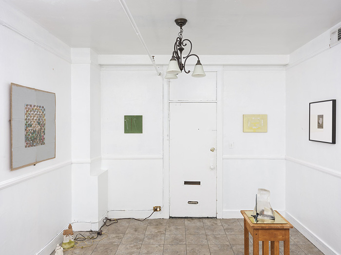
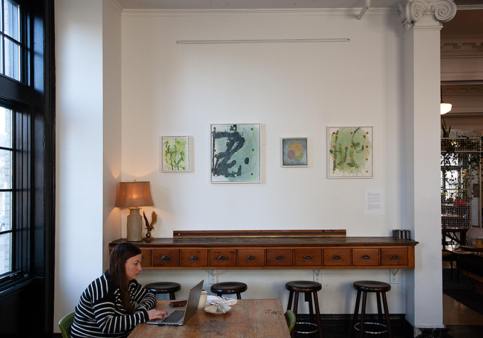
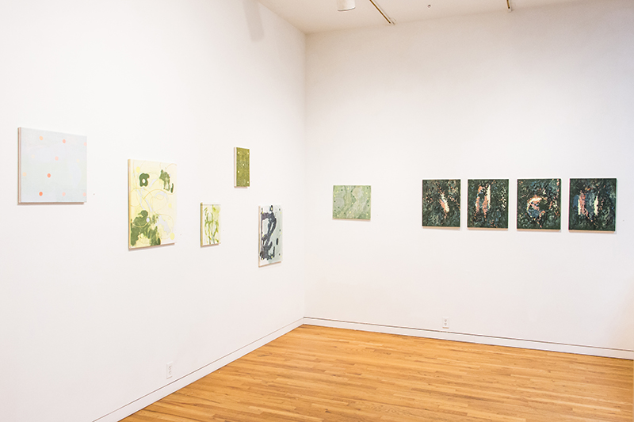
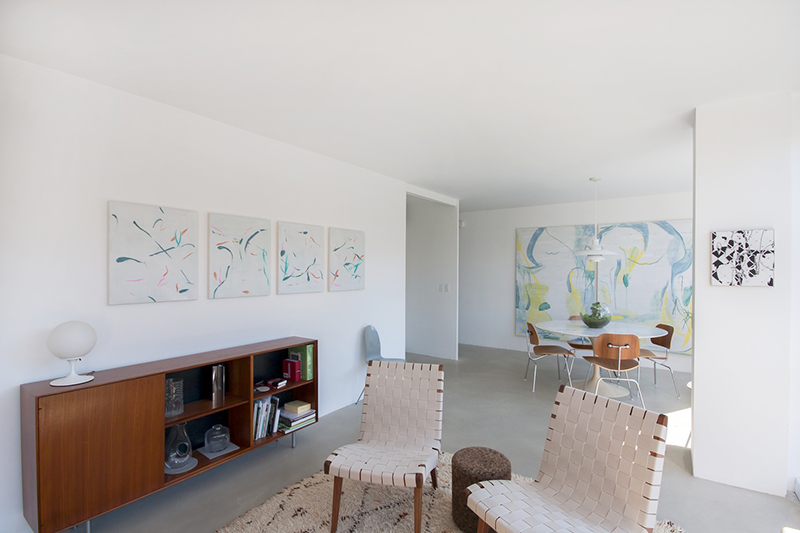
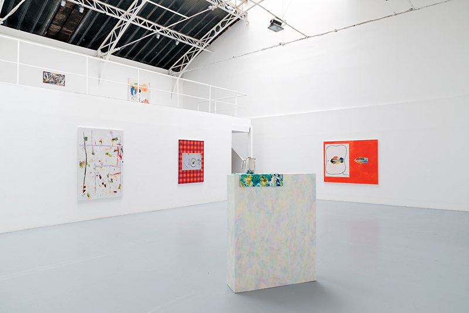
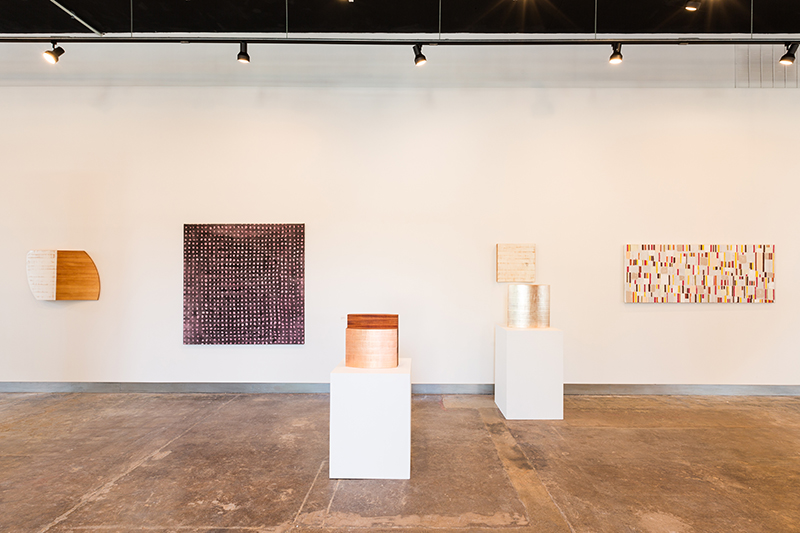
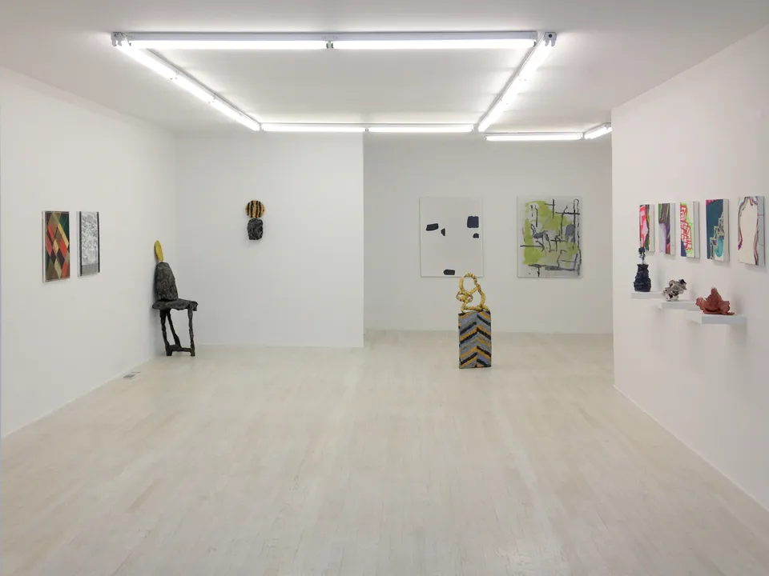
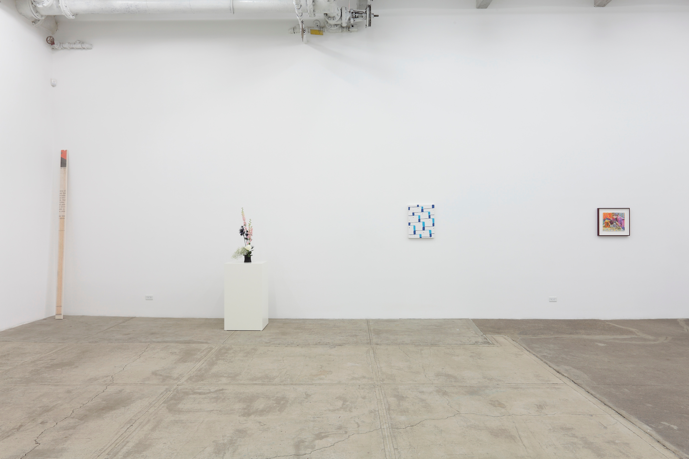

Selected Solo and Group Shows
Roundabout Walkabout, 2024
5 person group show at Gene's Dispensary curated by Keith Varadi, Los Angeles, CA
The Return of the Regressed, 2025
3 person group show at The Synagogue Space, curated by William Kofmehl III
Peter Mandradjieff, Recent Work, 2020
Ace Hotel, Pittsburgh, Pennsylvania.
Incremental Shift, 2017
Two-person show with Clayton Merrell & Peter Mandradjieff at Concept Art Gallery, Pittsburgh.
Summer Show, 2015
Three-person show with Atticus Adams, Kevin O'Toole, and Peter Mandradjieff. Curated by Tim Hadfield for Art Space 616, Pittsburgh.
Group Show, 2015
Curated by Eric Hussenot for Galerie Hussenot, Paris, France.
Peter Mandradjieff, Zak Prekop, 2013
Two-person show at Shane Campbell Gallery, Lincoln Park, Chicago, Illinois.
Human Drama, 2013
Group show curated by Denise Kupferschmidt for Halsey McKay Gallery, East Hampton, New York.
Addicted to Highs and Lows, 2011
Group show curated by Richard Aldrich for Bortolami Gallery, New York.

Group show at Gene's Dispensary, installation view, 2024

Ace Hotel installation, 2020

Incremental Shift at Concept Gallery, 2017

Peter Mandradjieff, Zak Prekop at Shane Campbell, 2013

Group Show at Galerie Hussenot, 2015

Summer Show at Art Space 616, 2015

Human Drama, 2013
